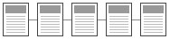
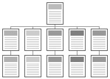
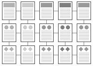
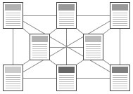
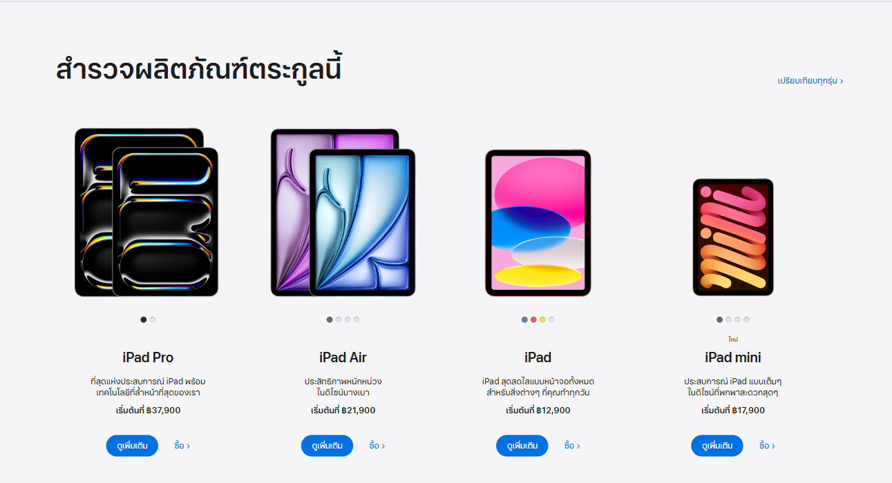

การออกแบบเว็บเพจและเว็บไซต์
การสร้างเว็บไซต์สิ่งสำคัญอยู่ที่การ ออกแบบเว็บ เพราะเว็บไซต์ที่มีรูปแบบสวยงาม จะสามารถดึงดูดความสนใจจากผู้คนได้ดีกว่า ทำให้ผู้คนเกิดความรู้สึกประทับใจ อยากกลับมาใช้งานเว็บไซต์อีกครั้งในอนาคต การออกแบบขึ้นอยู่กับโครงสร้าง และประเภทของเว็บไซต์ จึงไม่มีอะไรตายตัว ดังนั้นเริ่มแรกก่อนทำเว็บไซต์ จึงจำเป็นต้องทำความเข้าใจกับหลักการออกแบบและรูปแบบโครงสร้างของเว็บก่อน
รูปแบบโครงสร้างของเว็บไซต์
1. โครงสร้างแบบเรียงลำดับ
โครงสร้างเว็บไซต์แบบเรียงลำดับ จะเป็นโครงสร้างแบบธรรมดาที่นิยมใช้งานกันมากที่สุด เนื่องจากมีความง่ายต่อการจัดระบบข้อมูล และสามารถนำเสนอเรื่องราวตามลำดับได้เป็นอย่างดี เหมาะกับเว็บไซต์ที่มีขนาดเล็ก มีเนื้อหาที่ไม่ซับซ้อน
2. โครงสร้างแบบลำดับชั้น
โครงสร้างแบบลำดับขั้น นิยมใช้กับเว็บที่มีความซับซ้อนของข้อมูล เพื่อให้สามารถเข้าถึงข้อมูลต่างๆ ได้ง่ายขึ้น โดยจะมีการแบ่งเนื้อหาออกเป็นส่วนๆ และมีการนำเสนอรายละเอียดย่อยๆ ที่ลดหลั่นกันมา ทำให้สามารถทำความข้าใจกับโครงสร้างเนื้อหาได้ง่ายขึ้น โดยจะมีโฮมเพจเป็นจุดเริ่มต้น และจุดร่วมจุดเดียวที่จะนำไปสู่การเชื่อมโยงเนื้อหาเป็นลำดับจากบนลงล่าง
3. โครงสร้างแบบตาราง
โครงสร้างแบบตาราง เป็นโครงสร้างการออกแบบเว็บไซต์ที่มีความซับซ้อน แต่ก็มีความยืดหยุ่นในระดับหนึ่ง เพื่อให้ผู้ใช้งานสามารถเข้าสู่เนื้อหาต่างๆ ได้ง่ายขึ้น การออกแบบในลักษณะนี้จะมีการเชื่อมโยงเนื้อหาในแต่ละส่วนซึ่งกันและกัน ทำให้ผู้ใช้งานสามารถเปลี่ยนทิศทาง หรือกำหนดทิศทางในการเข้าสู่เนื้อหาด้วยตัวเองได้ จึงไม่ทำให้เสียเวลา แถมยังทำให้เว็บไซต์มีความทันสมัยขึ้น
4. โครงสร้างแบบใยแมงมุม
โครงสร้างแบบใยแมงมุม เป็นโครงสร้างที่ได้รับความนิยมเป็นอย่างมาก เพราะมีความยืดหยุ่นมากที่สุด โดยทุกหน้าเว็บจะมีการเชื่อมโยงถึงกันหมด ทำให้สามารถเข้าถึงหน้าเว็บเพจต่างๆ ที่ต้องการได้อย่างง่าย และมีความอิสระมากขึ้น นอกจากนี้ก็สามารถเชื่อมโยงไปสู่เว็บไซต์ภายนอกได้ดี
หลังจากเรียนรู้โครงสร้างแบบต่างๆ ของเว็บไซต์กันไปแล้ว ก็มาเรียนรู้การออกแบบเว็บไซต์ที่ดีต่อไปกัน
องค์ประกอบในการออกแบบเว็บไซต์
1. ความเรียบง่าย เข้าใจง่าย
การออกแบบเว็บไซต์ที่ดี จะต้องเน้นที่ความเรียบง่ายเป็นหลัก โดยเลือกนำเสนอเฉพาะสิ่งที่ต้องการนำเสนอจริงๆ ในรูปแบบที่หลากหลาย โดยอาจจะเป็นสีสัน กราฟิก ภาพเคลื่อนไหวหรือตัวอักษร ที่สำคัญจะต้องมีการนำเสนอที่ไม่ดูรกหน้าเว็บจนเกินไป เพื่อไม่ให้เกิดความรู้สึกรกสายตา
2. ความสม่ำเสมอ ไม่สับสน
ควรออกแบบเว็บไซต์ด้วยความสม่ำเสมอ คือจะต้องมีรูปแบบ กราฟิก โทนสีและการตกแต่งต่างๆ ให้แต่ละหน้าบนเว็บไซต์มีความคล้ายคลึงกัน และเป็นแนวเดียวกันไปตลอดทั้งเว็บไซต์ ต่างก็แค่การนำเสนอของแต่ละหน้าเท่านั้น
3. สร้างความโดดเด่น เป็นเอกลักษณ์
การออกแบบเว็บไซต์เพื่อให้สามารถสื่อถึงจุดประสงค์ในการนำเสนอเว็บได้ดี จะต้องมีการสร้างความเป็นเอกลักษณ์และจุดเด่นให้กับเว็บไซต์ เพื่อให้สามารถสะท้อนถึงลักษณะขององค์กรได้มากที่สุด
4. เนื้อหาต้องดี ครบถ้วน
เนื้อหาเป็นสิ่งที่สำคัญที่สุดของการสร้างเว็บไซต์ เพราะสิ่งที่ทำให้ผู้คนเกิดความสนใจ และหมั่นติดตามเว็บไซต์เหล่านั้นอยู่เสมอ ก็คือเนื้อหาที่มีความสมบูรณ์และน่าสนใจ นอกจากนี้จะต้องมีการปรับปรุง พัฒนาเนื้อหาบนเว็บให้มีความทันสมัยอยู่เสมอ รวมถึงข้อมูลต้องมีความถูกต้องที่สุด
5. ระบบเนวิเกชั่น ใช้ง่าย
เป็นเสมือนป้ายบอกทางเพื่อให้ผู้ใช้งาน ไม่เกิดความสับสนในขณะใช้งานเว็บไซต์ ซึ่งการออกแบบเนวิเกชั่นก็จะต้องเน้นที่ความเรียบง่าย ใช้งานสะดวก และมีความเข้าใจได้ง่าย ที่สำคัญจะต้องมีตำแหน่งการวางที่สม่ำเสมอเพื่อให้ดูเป็นแนวทางเดียวกัน ทำให้ผู้ใช้งานหรือผู้ชมรู้สึกประทับใจ และจดจำเว็บไซต์ได้ง่ายขึ้น
6. ความสะดวกในการเข้าใช้งาน
เว็บไซต์ควรให้ความสะดวกสบายแก่ผู้ใช้งานได้ดี คือจะต้องมีการแสดงผลได้ในทุกระบบปฏิบัติการ ไม่ว่าจะเป็นเว็บเบราว์เซอร์ คอมพิวเตอร์ โน๊ตบุ๊คหรือบนโทรศัพท์มือถือ ที่สำคัญจะต้องมีความละเอียดของการแสดผลและสามารถใช้งานได้โดยไม่มีปัญหาด้วย
7. ความคงที่ของการออกแบบ
การออกแบบเว็บไซต์ควรจะมีความคงที่ในการออกแบบ ด้วยการสร้างเว็บไซต์ด้วยแบบแผนเดียวกัน และมีการเรียบเรียงเนื้อหาอย่างรอบคอบ ทำให้เว็บมีความน่าเชื่อถือ และดูมีคุณภาพ ช่วยสร้างความประทับใจให้กับผู้ใช้งานได้เป็นอย่างดี
8. ความคงที่ของการทำงาน
ระบบการทำงานบนเว็บไซต์จะต้องมีความคงที่ และสามารถใช้งานได้ดี ซึ่งนอกจากการออกแบบระบบการทำงานให้มีความทันสมัยและสร้างสรรค์แล้ว ก็จะต้องหมั่นตรวจสอบอยู่เสมอ เพราะหากระบบการใช้งานมีความผิดปกติก็จะได้แก้ปัญหาได้ทัน